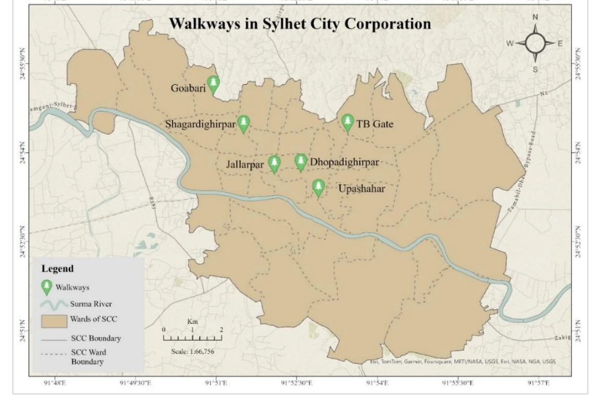
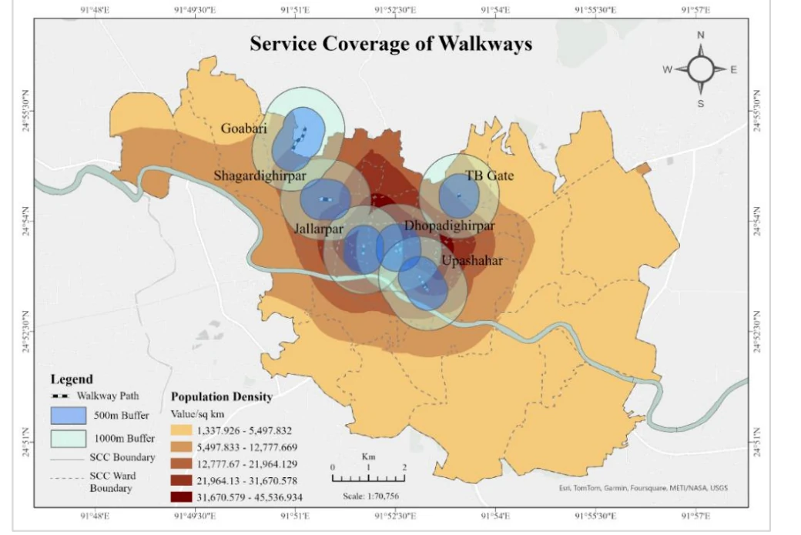
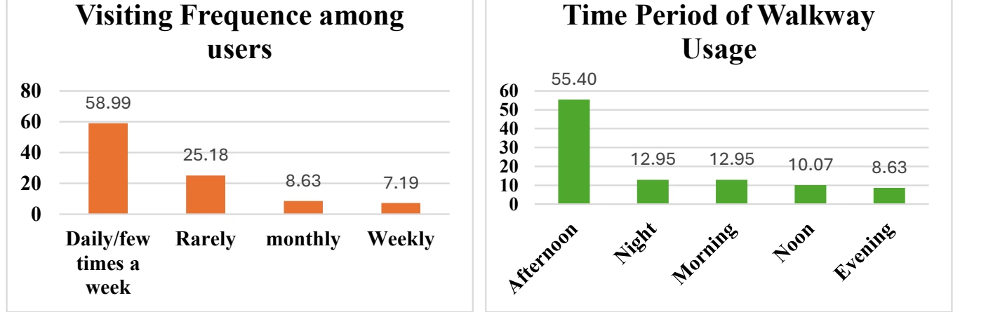

Published · Intl. Journal of Science and Development, 2025
Sylhet Walkways as Urban Windows
Walkways along Sylhet City Corporation's canals and lakes were built to give residents recreation and connectivity; this study measures whether they actually deliver on comfort and quiet, not just presence.
AuthorsHasan, M. M., Nishat, N. A., Ahsan, S. M. R., & Nayem, J.
JournalIntl. Journal of Science and Development, 2(1), 88–96
As Sylhet City Corporation (SCC) has expanded, walkways developed along its canals and lakes have been positioned as recreational, connective infrastructure, but their real-world effectiveness has remained underexplored. This study evaluates user satisfaction, safety, connectivity, and environmental impact across six walkway corridors (Jallarpar, Dhopadighirpar, Upashahar, Shagardighirpar, Goabari, and TB Gate), combining GIS-based service coverage analysis, environmental instrumentation (thermal and acoustic monitoring), and public surveys.

Map 1: The six studied walkways across Sylhet City Corporation's 27.36 km² area. Source: Hasan, Nishat, Ahsan & Nayem (2025).
Major Findings
GIS-based service coverage analysis shows Dhopadighirpar and Jallarpar as the central, highest-value assets, reaching up to 45,045 and 41,442 people within a 500m buffer and over 140,000 and 131,000 within 1000m, versus under 10,000 (500m) for the peripheral TB Gate and Goabari walkways.
Walkways in these high-density neighborhoods meaningfully support social interaction and accessibility, reflected in a Walkway User Satisfaction Index (USI) of 3.50: moderate contentment, not a clear win.
Thermal comfort assessment using the Humidex index found no statistically significant reduction in heat stress inside the walkways compared to surrounding areas (mean difference −0.86, p = 0.479), with values frequently exceeding the dangerous Humidex > 45 threshold on both sides.
Noise told a different story: a statistically significant mean reduction of 12 dB inside the walkways (p = 0.0074), though interior levels still exceed the WHO's recommended 55 dB LAeq limit for recreational spaces, meaning the improvement isn't yet sufficient on its own.
Usage is heavily concentrated: nearly 59% of respondents visit daily or a few times a week, over 70% come for socializing and recreation rather than commuting, and 55% prefer the afternoon; evening and night usage lags well behind, pointing to lighting and safety as the binding constraints.
Residents' top concerns were safety, poor connectivity, air quality, and excessive heat stress, and they specifically asked for wider paths, better lighting, and improved accessibility.

Map 2: Service coverage of the six walkways. 500m/1000m population buffers overlaid on population density, showing Dhopadighirpar and Jallarpar sitting inside the division's densest population band, the spatial detail behind finding 1 above.

Fig. 2: Usage patterns from the survey. Visiting frequency (left) and preferred time of day (right), the data behind finding 5 above.
Why It Matters
SCC's walkway network is a genuinely useful sustainable-urban-design model, but this study shows "built" isn't the same as "working." The environmental benefits, thermal comfort especially, lag behind the social ones, and the recommended fixes (sound barriers, strategic landscaping, lighting, connectivity improvements) are concrete enough to act on rather than generic calls for "more green infrastructure."